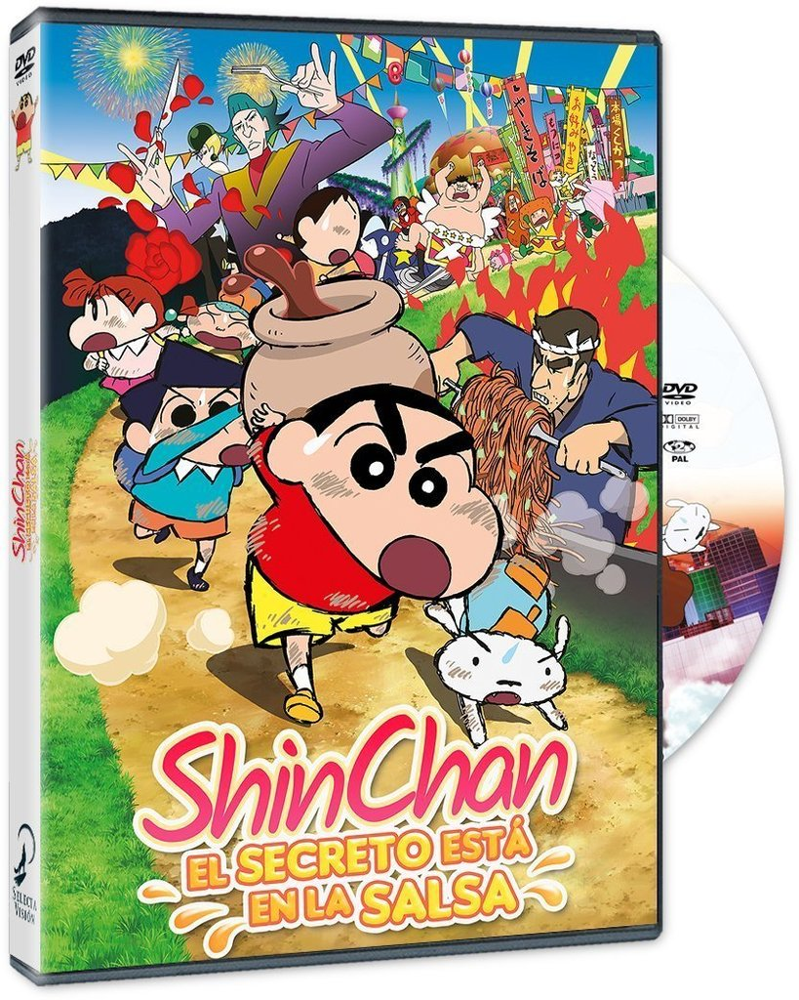
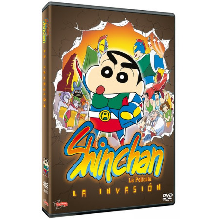
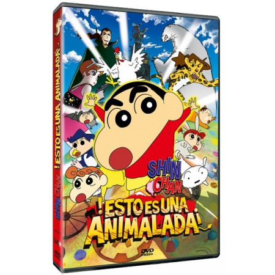
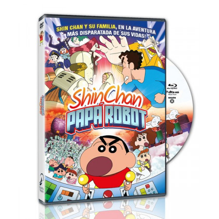

Proyectos
Trabajos realizados
-
 Shin Chan - El secreto está en la salsa -
Shin Chan - Operación rescate -
 Shin Chan - La invasión -
 Shin Chan - ¡Esto es una animalada! -
 Shin Chan - Papá robot